INDONESIA · SUNDA
Sunda Halus
Visual Sunda Halus — invitation cover dengan motif, tipografi, dan nuansa Sunda.
Mulai dari Sunda Halus, Jawa Tengah, Solo, Jogja, Bali hingga gaya pernikahan dari berbagai kawasan dunia. Semua dapat disesuaikan di Invitation Editor.
Visual Sunda Halus — invitation cover dengan motif, tipografi, dan nuansa Sunda.
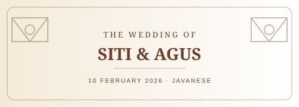
Visual Jawa Tengah — invitation cover dengan motif, tipografi, dan nuansa Javanese.
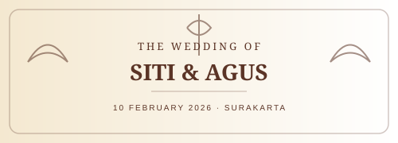
Visual Solo Heritage — invitation cover dengan motif, tipografi, dan nuansa Surakarta.
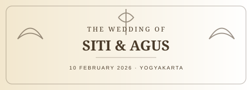
Visual Jogja Royal — invitation cover dengan motif, tipografi, dan nuansa Yogyakarta.
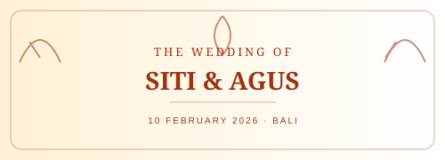
Visual Bali Ayu — invitation cover dengan motif, tipografi, dan nuansa Bali.
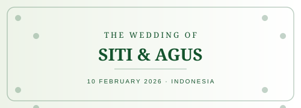
Visual Nusantara — invitation cover dengan motif, tipografi, dan nuansa Indonesia.
Visual Modern Indonesian — invitation cover dengan motif, tipografi, dan nuansa Indonesia.
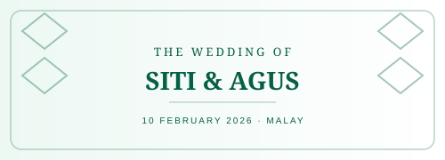
Visual Malay Elegance — invitation cover dengan motif, tipografi, dan nuansa Malay.
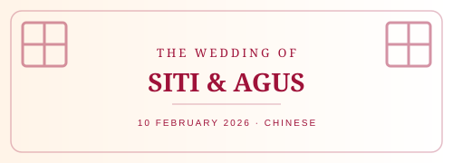
Visual Chinese Modern — invitation cover dengan motif, tipografi, dan nuansa Chinese.
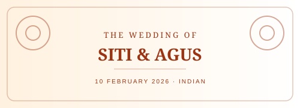
Visual Indian Celebration — invitation cover dengan motif, tipografi, dan nuansa Indian.
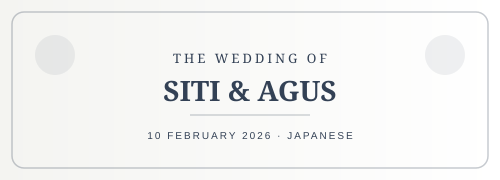
Visual Japanese Minimal — invitation cover dengan motif, tipografi, dan nuansa Japanese.

Visual Korean Modern — invitation cover dengan motif, tipografi, dan nuansa Korean.
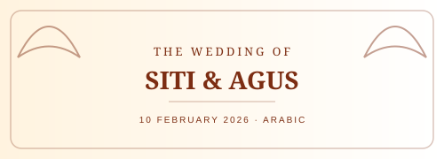
Visual Arabic Elegance — invitation cover dengan motif, tipografi, dan nuansa Arabic.
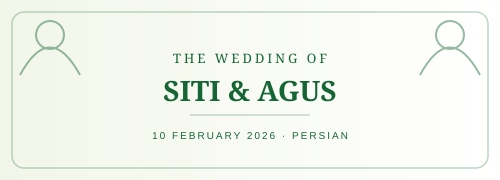
Visual Persian Garden — invitation cover dengan motif, tipografi, dan nuansa Persian.

Visual French Romance — invitation cover dengan motif, tipografi, dan nuansa French.
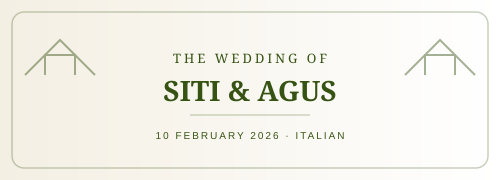
Visual Italian Villa — invitation cover dengan motif, tipografi, dan nuansa Italian.
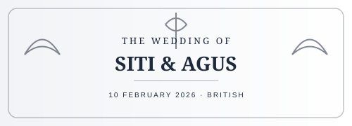
Visual British Classic — invitation cover dengan motif, tipografi, dan nuansa British.
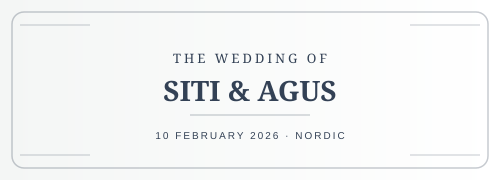
Visual Nordic Minimal — invitation cover dengan motif, tipografi, dan nuansa Nordic.
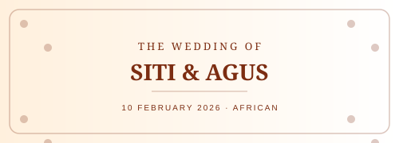
Visual African Celebration — invitation cover dengan motif, tipografi, dan nuansa African.
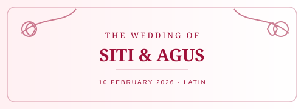
Visual Latin Romance — invitation cover dengan motif, tipografi, dan nuansa Latin.
Visual American Classic — invitation cover dengan motif, tipografi, dan nuansa USA.
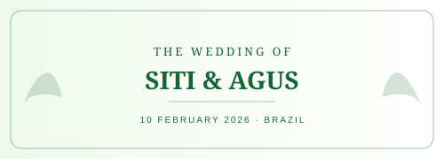
Visual Brazilian Tropical — invitation cover dengan motif, tipografi, dan nuansa Brazil.
Visual Oceanic Beach — invitation cover dengan motif, tipografi, dan nuansa Ocean.

Visual International Classic — invitation cover dengan motif, tipografi, dan nuansa Global.